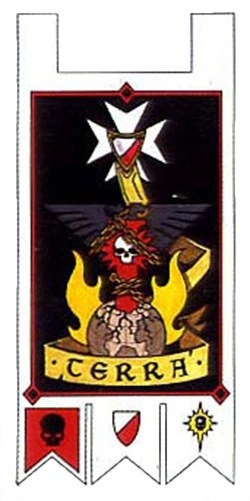

Reign of Blood
| Reign of Blood | |
|---|---|
| First part of the Age of Apostasy | |
 Cardinals of the Ecclesiarchy in procession. Under Vandire the Holy Synod was purged and refilled with his creatures | |
| Period | Early M36; about seventy years, ending c. 288.M36[a] |
| Ruler | Goge Vandire, Master of the Administratum and Ecclesiarch |
| Seat | The Ecclesiarchal Palace, Terra |
| Enforcers | The Frateris Templar; the Brides of the Emperor |
| Opposed by | Sebastian Thor and the Confederation of Light; the Adeptus Mechanicus; loyal Chapters of the Adeptus Astartes |
| Ended by | The Terran Crusade; Vandire beheaded by Alicia Dominica |
| Consequences | Decree Passive; Adepta Sororitas; Ordo Hereticus; reform of the Holy Synod; the Great Cull |
The Reign of Blood was the rule of the High Lord Goge Vandire in the early 36th millennium, during which he held both the office of Master of the Administratum and that of Ecclesiarch and made himself the most powerful individual in the Imperium since the Great Crusade. For about seventy years he used the wealth and armies of the Adeptus Ministorum to wage pogroms against imagined heretics, to cow the other Adepta and to raise monuments to the Emperor and to himself. The period is the first and worst part of the Age of Apostasy.[1]
The Reign of Blood grew out of a struggle for power between the two greatest bureaucracies of the Imperium, the Administratum and the Ecclesiarchy, that had lasted for most of a millennium. Each had tried to master the other, and Vandire, a Master of the Administratum who seized the Ecclesiarchy by murder, ended the contest by ruling both. His rule ended when the preacher Sebastian Thor raised the Imperium against him, the Adeptus Mechanicus and four Chapters of Space Marines laid siege to his palace, and his own bodyguard, the Brides of the Emperor, turned on him.[2]
The consequences of the Reign of Blood are still felt. The Decree Passive forbade the Ecclesiarchy to keep men under arms, the Brides became the Adepta Sororitas, the Inquisition created the Ordo Hereticus to watch over the Imperium's own institutions, and the High Lords purged the Adeptus Terra in the Great Cull.
Background
[edit]The Ministorum ascendant
[edit]The Ecclesiarchy had become the state church in the Time of Rebirth and grew throughout The Forging. It emerged from the Nova Terra Interregnum as the most powerful institution in the Imperium, for it alone had been able to rally the faithful of both courts and end the division in the Cataclysm of Souls of 975.M35. By the turn of the millennium its tithes took precedence over those raised by the Administratum, leaving the Administratum's coffers too poor to pay for the running of the Imperium. The Ecclesiarch was held to speak with the Emperor's own authority, and the Ministorum came to decide matters that had nothing to do with religion: the raising of armies, the conduct of wars, the use of Imperial resources and the appointment of sector lords. The Adeptus Astartes and the Adeptus Mechanicus drew away from Terra in distrust.[1]
The Administratum's counter-stroke
[edit]The Administratum fought back by stealth. Over many generations it placed its own supporters in key offices across the Imperium and made sure that the officials whom the Ministorum succeeded in appointing were weak, incompetent or corrupt. The policy worked. It restored much of the Administratum's influence, but it also filled the Imperium's government with men chosen for their weakness, and Imperial historians see in it the cause of the catastrophe that followed.[1]
The Ecclesiarch Benedin IV answered by moving the Holy Synod from Terra to Ophelia VII, a rich world of the Segmentum Tempestus, ten thousand light years from the Senatorum Imperialis. Freed from the other High Lords, the Ministorum raised armies and fleets of its own, the Frateris Templar, which came to rival the Imperium's regular forces and were hated wherever they went. Three centuries later the Ecclesiarch Greigor XI, a man of real piety, decided to return the Synod to Terra. The move took more than a decade and was paid for by a great increase in tithes. Greigor died of food poisoning soon after, and the tithes were not reduced. Whole worlds starved to rebuild the long-abandoned palaces of the Ecclesiarchy on Terra.[2]
Warp storms
[edit]In the early 36th millennium the number of Warp storms rose by an order of magnitude. Travel beyond a single system became perilous, and the central government of many worlds collapsed. Traitor Legions raided from the Eye of Terror, Ork hulks drifted into regions they had never reached and the Drukhari raided at will. On world after world new sects proclaimed that the God-Emperor was passing his final judgement on mankind, and whole populations gave themselves to penance, self-flagellation and the burning of heretics.[1]
Rise of Vandire
[edit]Goge Vandire was the 361st Master of the Administratum, an office he had won by bribery, threats and assassination. He was a determined enemy of the Ministorum. Shortly before he became a High Lord he arranged the election of his own candidate as Ecclesiarch, Paulis III, who is reckoned the weakest man ever to hold the office. Rumours of the new Ecclesiarch's vices spread through the upper ranks of the Imperium, and when confidence in him had collapsed Vandire led his retainers into the Ecclesiarchal Palace, shot down those who barred the way and killed Paulis without trial. He proclaimed himself Ecclesiarch while keeping the office of Master of the Administratum. In the following days he purged the Holy Synod. Some cardinals fled; those who protested were killed and replaced by weaklings or by allies of his own.[1]
The regime
[edit]Government by decree
[edit]With both great bureaucracies in his hands, Vandire claimed to speak with the authority of the Emperor. He fell into frequent trances, in which he said he communed with the God-Emperor, and came out of them in rages, demanding that an army of clerks transcribe his every word. Many of his decrees defied reason, and several directed violence against whole sections of the Imperium's population. Whatever his state of mind before his rise, it grew worse after it.[1]
The Astra Telepathica
[edit]Only the Master of the Adeptus Astra Telepathica, Lord Phaedrus, held out. A powerful psyker, he saw through Vandire and stayed ahead of his plots. Vandire could not simply kill him, for he would be replaced by another psyker of equal strength. Instead he lured Phaedrus into a trap where a Culexus Assassin of the Officio Assassinorum cut him off from the Warp for ever. A bribed Magos Biologis kept him alive on a life-support engine, and Vandire prevented his attempts at suicide. In exchange for silence about his loss, Phaedrus did whatever Vandire asked.[3]
The Brides of the Emperor
[edit]On the agri-world of San Leor Vandire met the Daughters of the Emperor, a convent of warrior-women. He told their leader, Alicia Dominica, to shoot him. The shot did not harm him, for he wore a concealed conversion field, but the Daughters believed that the Emperor protected him and swore him absolute loyalty. He renamed them the Brides of the Emperor and took them to Terra as his bodyguard, servants and executioners. When the Holy Synod tried to have him assassinated a few years later, the Brides locked themselves into the Synod's chamber with the cardinals and came out an hour later carrying their heads.[4]

Pogroms and monuments
[edit]For seven decades the resources of the Ministorum went into pogroms against heretics, most of them imaginary, and into monuments. Distant worlds were adorned with spires a kilometre high and cathedrals in Vandire's honour, while on Terra the Ecclesiarchal Palace was left to decay, its vast wings silent. The Frateris Templar fought Wars of Faith on his orders. For the peoples of the Imperium there were two choices: to submit to the High Lord or to be crushed by the Brides and the Templar. The name the period was given, the Reign of Blood, comes from these years.[1]
Opposition
[edit]Sebastian Thor
[edit]The challenge came from the edge of the Imperium. On the world of Dimmamar the preacher Sebastian Thor spoke against the injustice of Vandire's rule, and his followers protected him from the assassins sent to kill him, many of whom were converted. Vandire gathered an army of the Frateris Templar in the Clax System and sent it to destroy Dimmamar. It never arrived. Its fleet was torn apart in the Warp by a storm so great that it still rages four thousand years later, the Storm of the Emperor's Wrath; psykers say the screams of the dead can be heard in it. Thor's following grew, and members of the outlawed Confederation of Light, suppressed by the Temple of the Saviour Emperor in the 33rd millennium, came to him. Thor and the Confederation became one movement.[5]
The Astartes and the Mechanicus
[edit]The Space Marine Chapters and the forge worlds had held aloof from Terra throughout the Reign, defending their own domains. As news of Thor spread, many Chapter Masters of the Segmentum Solar spoke in his favour. The Fabricator-General of Mars, Gastaph Hediatrix, demanded that the Holy Synod indict Vandire. Vandire's answer was to dissolve the Senatorum Imperialis and order his forces against the Space Marines and the Mechanicus. Most of his commanders refused, and he declared them heretics.[1]
The Terran Crusade
[edit]
The Fabricator-General resolved to depose Vandire himself. An army of Mechanicus Tech-Guard, led by four Chapters, the Imperial Fists, the Fire Hawks, the Soul Drinkers and the Black Templars, sailed for Terra and besieged the Ecclesiarchal Palace. The Black Templars, under High Marshal Sigenandus, call the campaign the Terran Crusade. It was the first time since the Heresy that armed Space Marines had made war on Terra.[6]
The Adeptus Custodes had kept their vigil over the Golden Throne throughout the Reign, sealed in the Imperial Palace and knowing little of what passed outside. When the Space Marines came they learned the truth. A party of Custodians led by the Centurion Longinus came by secret ways to the Ecclesiarchal Palace and met the Brides. Longinus laid down his weapons and pleaded with them for an hour to renounce their oaths. When he failed, he left his warriors as hostages and led Alicia Dominica and five of her sisters into the Sanctum Imperialis, before the Emperor on the Golden Throne.[4]
What happened there is not recorded. The Brides came out in anger, renounced the name Vandire had given them and became again the Daughters of the Emperor. They went straight to his audience chamber, where Dominica denounced him for having profaned the Emperor's name and almost destroyed what he had built. Vandire seemed hardly to understand. His last words were that he had no time to die, for he was too busy. Dominica beheaded him with one stroke of her power sword, which also cut in two the rosarius that had saved him on San Leor.[4]
Aftermath
[edit]Sebastian Thor became Ecclesiarch. He dismantled the apparatus of Vandire's rule, restored independent High Lords to all the seats of the Senatorum Imperialis, and made the Administratum and the Ecclesiarchy autonomous again, so that neither could command the other. The Holy Synod was reconstituted as a council of all the cardinals, which would shape doctrine collectively. The High Lords issued the Decree Passive, which forbade the Ecclesiarchy to keep "men under arms", and Thor disbanded the Frateris Templar. Because the decree spoke of men, the Daughters of the Emperor were made into the Orders Militant of the Adepta Sororitas.[5]
The Inquisition created the Ordo Hereticus to root out enemies within the Imperium's own institutions, however high, with the Sisters of Battle as its Chamber Militant, and the Ordo Sicarius to watch over the Officio Assassinorum. Within the Officio itself the end of the Reign was followed by the secret Wars of Vindication, which for a time spilled into the Imperial Palace. Their causes are sealed.[3]
Not all of the faithful accepted Thor's reforms. Believers in the old doctrine of the Temple of the Saviour Emperor formed the heretical Temple Tendency, which troubled the frontier for millennia. Some decades after Vandire's death the Plague of Unbelief of the Apostate Cardinal Bucharis brought the Age of Apostasy to its close. At the start of the 37th millennium the High Lords ordered the Great Cull of 020.M37, a purge of the Adeptus Terra meant to ensure that such a corruption of the faith could never happen again, and the common struggle against the Wrath of the Chaos Sun in 010.M37 is said to have healed many of the wounds that Vandire had opened.[7]
Historiography
[edit]Imperial accounts of the Reign of Blood come mainly from the Ecclesiarchy, which had every reason to blame the Administratum, and from the Adepta Sororitas, for whom the beheading of Vandire is a founding story. Administratum historians have stressed instead the Ministorum's own corruption in the centuries before, without which Vandire could not have risen. The disagreement over the length and date of the Reign has never been settled.[7]
Timeline
[edit]Dated events of the Reign of Blood and its aftermath. See also 36th millennium.
| Date | Event |
|---|---|
| 975.M35 | The Cataclysm of Souls leaves the Ecclesiarchy the strongest power in the Imperium. |
| c. 218.M36 | Goge Vandire, Master of the Administratum, also becomes Ecclesiarch.[b] |
| 228.M36 | The War of Assassins. |
| c. 238.M36 | Sebastian Thor born on Dimmamar. |
| 245.M36 | Cardinal Yoren Kipraus of Verronus taken by the Frateris Templar for denouncing the regime. |
| 257–277.M36 | Revolts in the Jericho Sector end with the fall of the Over-Governors. |
| c. 288.M36 | The Terran Crusade reaches the Ecclesiarchal Palace; Vandire beheaded by Alicia Dominica. |
| 288.M36 | The Decree Passive; Thor becomes Ecclesiarch. |
| 350.M36 | Death of Thor. |
| 020.M37 | The Great Cull of the Adeptus Terra. |
See also
[edit]Notes
[edit]- ^ The Administratum's register places the end of the Reign of Blood immediately before the Decree Passive of 288.M36. A Black Templars chronicle dates the Terran Crusade that ended it to 378.M36, and some summary tables put its beginning as early as about 200.M36. This article follows the Administratum, as does Age of Apostasy.
- ^ Date estimated from the sequence of events: about seventy years before his death.
References
[edit]- ^ a b c d e f g h Annals of the Reign of Blood (M36). Administratum Archive, Terra.
- ^ a b Liber Ecclesiasticus (M37). Adeptus Ministorum.
- ^ a b Charter of the Ordo Sicarius (M36). Inquisition, Terra (sealed).
- ^ a b c The Book of Dominica (M36). Convent Sanctorum, Ophelia VII.
- ^ a b Sermons of Sebastian Thor (288.M36, revised M37). Adeptus Ministorum, Terra.
- ^ Chronicle of the Terran Crusade (M36). Black Templars archive.
- ^ a b Codex Imperialis (rev. 980.M41). Adeptus Terra.